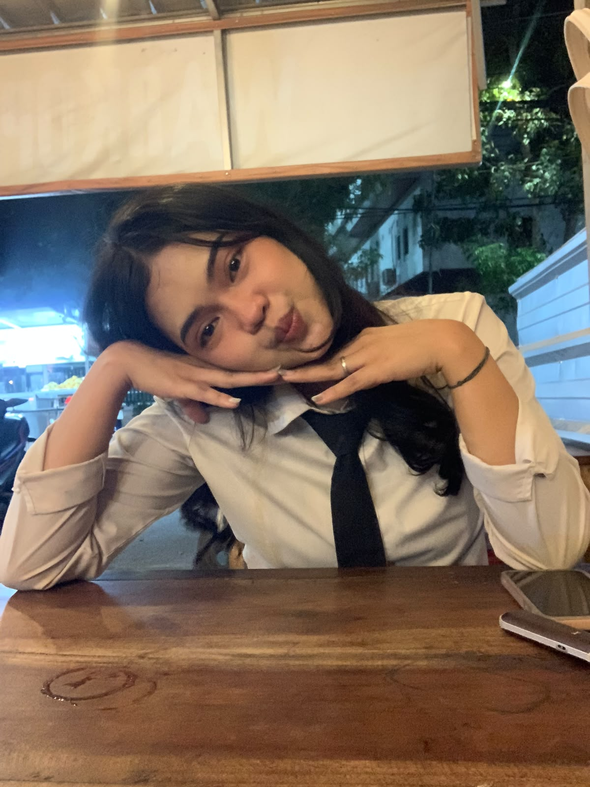
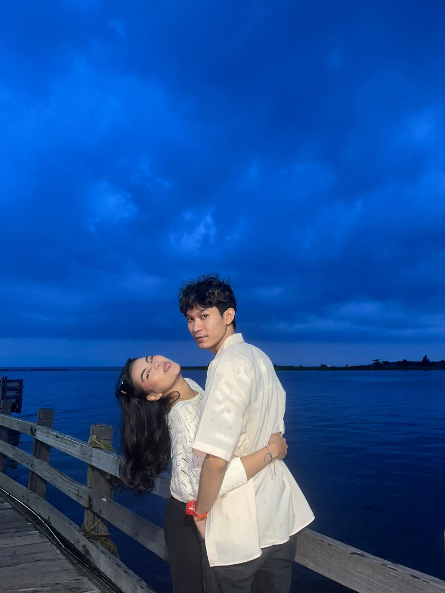
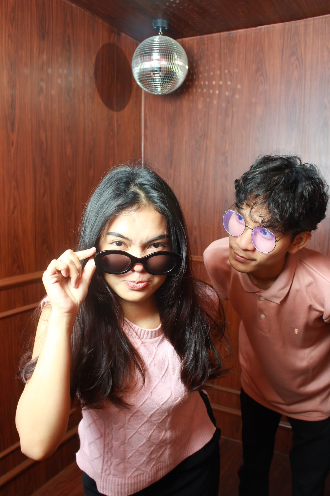

Haii tayangna aku, ini aku, io, ionya kamu yang buat ini, aku seneng deh bisa liat kamu bisa sejauh ini, kamu wanita hebat yang selalu mengusahakan apapun sendiri, tapi kamu jangan khawatir yaa, aku akan selalu terus temani kamu, karena aku mau ada aku di setiap langkah kamu, Selamat ulang tahun sarah, maaf untuk banyaknya hal yang masih kurang buat kamu, maaf untuk banyaknya ekspektasi kamu yang belum bisa aku penuhin, tapi percaya sama aku, akupun disini selalu mengusahakan yang terbaik buat kamu, maaf untuk banyak nya hal hal yang membuat kamu kecewa maaf untuk ke egoisan aku yang bikin kamu sebel marah bahkan sampe bikin kamu cape, aku minta maaf ya sayang, maaf juga kalo overthinking nya aku bikin kamu repot, bikin kamu ngerasa ribet, dan kadang buat menuhin rasa ovt kamu sampe bingung harus gimana, aku minta maaf yaa, aku seperti itu bukan semata mata aku ribet bukan, tapi karena aku setakut itu untuk terjadi hal hal yang menyakitkan aku ga siap ☹️, aku sayang banget sama kamu sarah, maaf ya kalo sayangnya aku berlebihan jadi bikin ribet aku minta maaf sayang, maaf juga telat ucapinnya, tapi ga mengurangi rasa cinta kamu ke aku kan? terus jadi sarah yang aku kenal ya, jangan pernah berubah sedikitpun karena aku sudah terbiasa hidup dengan kamu di samping aku, kita usahakan apapun yang sedang kita usahakan ya, kamu juga, semangat untuk semua yang sedang kamu usahakan jangan pernah ngerasa sendiri, ada aku selalu buat suport kamu, aku akan jadi orang pertama yang selalu bangga apapun itu tentang kamu, kalo kamu lagi ngerasa cape sama dunia kamu ngerasa ga ada yang bangga sama kamu, dan kamu ngerasa kamu ga pantes dalam hal apapun, liat aku, kamu liat aku, aku yang akan berteriak ke semuanya kalo aku yang akan menjadi satu satunya orang yang bangga sama kamu, yang akan merawat kamu sampe kamu jadi berharga dan tidak ternilai, kamu pantas untuk apapun, sangat jadi apapun yang sedang kamu usahakan, kamu semangat yaa.. aku akan terus dampingi kamu, dan aku harap kamu juga seperti itu. terimakasih sudah berkenan jadi pasangan manusia yang ribet sangat ribet ini, aku berterimakasih banyak sama kamu uda mau sasyang sama aku uda kasih semua ke aku, aku berterimakasih banyak sama kamu, aku berharap semoga kita berakhir dengan akhir yang bahagia, sekali lagi, aku bangga bgt sama kamu, aku sayang bgt sama kamu. and happy birthday zumeee, iloveu ❤️✨


